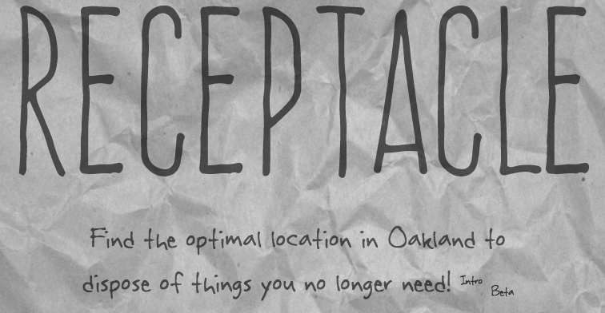
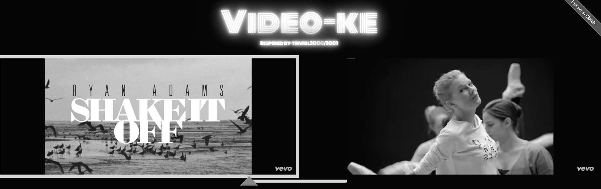

projects
Here I will mention my experiences at Telegraph Academy (TGA) and discuss how and why to choose good projects. I made an effort to really mix the technologies and frameworks used and make them interesting.
Your blog and your projects will shape you (after resume on right):
Your projects will determine your skills and both will take up 50% of your resume.
When choosing projects, make sure to have aspects you love about project while also allowing your teammates to have aspects they love. This will guarantee that everyone will work hard and be able to talk about them intelligently.
Receptacle was a project that focused on a simple question: what receptacle does this unwanted good go?

Current Features & Stack
Angular Application
Visuals & UX/UI Emphasis
Future Features, Stack, & Opportunities
Redis
User Input Option
Video-ke was an dual video player with crossfading that populated using the Youtube API.

Current Features & Stack
jQuery UI Bootstrap
iFrame API
Crossfader feature
Future Features, Stack, & Opportunities
Competetive Karoake
Voting - Event Music feature
SixDribbles maps player relationships for the NBA.

Current Features & Stack
Angular Front-End
Node/Express Server
Future Features, Stack, & Opportunities
Add Coaching Relationships
Mobile (ReactNative)
Desktop (Electron)
Katfish lets users create attribute-based profiles for their friends!

Current Features & Stack
Mobile (ReactNative)
iOS , built with xCode IDE
SDK Authentication
Future Features & Stack
Rebuild for hackathon use
ReactNative/Firebase Library
"How long have you spent on this... 16 hours? That makes you an expert. When you figure it out, tell me and I'll post your blog."
Your projects are extremely important and what makes you stand out. Other coding bootcamp students and self-taught programmers often don't have 3-4 projects to show. In addition, some of their best work may be under a Non-disclosure Agreement, your projects will not.
You will become an preeminent expert on certain connections and technologies if you choose to. Developers are too busy with their job to learn new cutting edge technologies or try combinations that aren't traditional. Doing either will make you esteemed within the community and will give you something interesting to talk about. Pay attention to what your classmates do as well, it could be just as important as your own projects.
Most importantly, make sure you love some part of the topic. You will have to talk about these projects over and over and over, so make sure they are about something you care about.